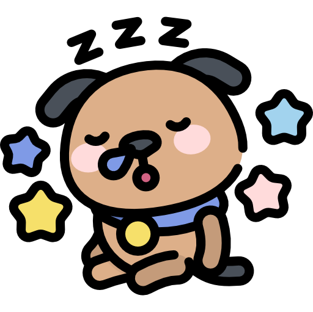

"A favourite theory of mine is no occurance is sole or solitary, but is mearly a repetition of a thing which has happened before, perhaps often."
-Mark Twain
Esto es bastante cierto, los conflictos, por pequeño que sean practicamente son la repetición de algo anterior. Por ejemplo, la guerra de los 30 años (1618-1648) y la Guerra de Tugoslavia (1991-1995) fueron causadas por religión y por la perspectiva de otras creencias causadas por estas religiones.

Perrito
Ejemplos en la Historia
02/12/21
Mayores Guerras, Conflictos y Eventos Repetitivos por Ideologia o Progreso
Chihuahua de cabeza de manzana.
Chihuahua cabeza de venado.
Chihuahua de pelo corto.
Chihuahua de pelo largo
Chihuahua sin pelo.
Chihuahua toy o miniatura.
Pequines maltes.
Pequines albino.
Pequines manga
Pequines estandar
Pekinés
La Historia y su Repetición
14/01/22
Autor: Tedx Talks, Taylor Rappeport. 16/Jun/15
Huella de Perrito
24/01/22
Los perros son animales que han evolucionando mucho
eso hace que hayamucha diferencia entre ellos.
Los perros evolucionaron del lobo un animal que se acostumbro a climas
frios y que tiene mucho carisma, evolucionaron a perros gracias a
los humanos los cuales hicieron equipo, y mejoraron el estilo de lucha
y caza.
las mejores razas de perros son aquellas en las que el perro es fuerte
y tiene un buen sentido del olfato, a diferencia de otros perros como
los chihuahuas los cuales son F tier, son perros muy territoriales, ademas
muy pequenos y tambien no tiene el mejor sentidos del olfato.
Las guerras medievales son un muy gran ejemplo de esto, la necesidad de poder y de territorio, simplemente el ver al imperio romano muestra mucho, uno de los imperios mas grandes (en un solo tiempo), otro ejemplo es el Reino Britanico que a traves de la historia han conquistado muchos lugares, tanto asi que solo hay Todos los países que hemos invadido y los pocos a los que nunca llegamos, solo hay 22 de los actuales estados que Gran Bretaña nunca ha ocupado a lo largo de su historia.
La necesidad de tener mas territorio siempre ha estado presente y no es nada nueva como se puede ver. Ejemplos modernos pueden ser el de esto es la isla de Cyprus, esta fue dividida por religion y territorio, donde los turcos querian la isla para ellos, los griegos en el otro lado pensaban que la isla era suya ya que la mayoria de su población era griega. Esto empezo un conflicto que el Reino Unido detuvo por un tiempo con un tratado peor Turquia rompio este tratado al mandar tropas militares tras varias manifestaciones, esto cause que grecia mandara tambien sus tropas. Despues de mucho pelear para determinar de quien era el territorio la ONU hizo una linea de "Alto al fuego" donde el pais se dividio en 4 al final. El este de la isla es griega, el oeste turca, el sur es britanico y en el centro de la isla hay una linea que no tiene dueño ya que es el alto al fuego
Perro
Chihuahua
29/01/22
Soldados Rusos peleando en la nieve, Ucrania 2022
A menos de que vivas bajo una piedra sabras que rusia ha invadido Ucrania (Febrero 24, 2022). De acuerdo a Putin la razón de esta invasión es que Ucrania estaba siendo manipulada por el oeste y la OTAN (Organización del Tratado del Atlántico Norte), añadido a esto Vladimir Putin cree que Ucrania es como un hermano perdido de Rusia de acuerdo a un texto escrito por Vladimir Putin, el dice que en caso de llegar a Ucrania seria aceptado con brazos abiertos, la realidad fue muy opuesta.
En la madrugada de el 24 de Febrero bombardeo ruso empezo en Ucrania y al momento en que rusos entrarón a Ucrania se encontraron con oposición fuerte de la guardia nacional de Ucrania, hasta ahora la verdadera razón de Putin no es conocida y quien sabe si lo sera pero muy probablemente es su manera de ver el mundo, creyendo que la gente ucraniana necesita ayuda o salvación del resto. Para perspectiva putin cree que el colapso de la URSS fue el evento mas catrastofico de el Siglo XX, se le olvida que dos guerras mundiales pasaron ese siglo...
02/02/22
Cual es la peor raza de perro?, quiero decir que no odio a ningun perro, en especifico, y que todos me agradan y me caen bien, sheeesh.
Ejemplos incluyen:
Chihuahua de cabeza de manzana.
Chihuahua cabeza de venado.
Chihuahua de pelo corto.
Chihuahua de pelo largo
Chihuahua sin pelo.
Chihuahua toy o miniatura.
Pequines maltes.
Pequines albino.
Pequines manga
Pequines estandar
Meme
05/10/22
Autor: Yo, xD
Mi perro durmiendo
Este meme se me ocurrio cuando vi a mi perro dormido y lo desperte por accidente entonces le tome una
foto es el perro del que hablaba en el pae anterior espero les guste el meme y mi perro muchas gracias
por su atencion.
.png) Perros
Perros Ejemplos en la Historia
Ejemplos en la Historia.jpg)
 La Historia y su Repetición
La Historia y su Repetición Huella de Perrito
Huella de Perrito


.jpg)
 Meme
Meme